Trip planning is scattered across a dozen apps.
This from-scratch side project began with user research to uncover key pain points in trip planning. Our goal was to design a solution that simplifies the planning process and makes it easier for travel companions to collaborate and enjoy the experience together.
- 3 rounds of user interviews and testing to define the key needs in trip planning.
- The "Travel Playlist" feature — apply itineraries by theme, location, or season — boosting planning efficiency by around 30%.
- A cross-platform prototype with a clean, consistent visual style.
Four stages, from interviews to How-Might-We.
Our research followed a four-stage process — user interviews, then empathy maps, POV statements, and finally HMW questions to guide ideation.
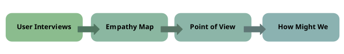
User interviews — understand behaviors and pain points
We ran in-depth interviews to explore how users plan trips, the tools they rely on, and the challenges they hit — two rounds, first with a diverse range of travelers, then focusing on experienced solo planners. The questions focused on the user's role, planning methods, main pain points, and desired solutions:
- What role do you usually play when planning a trip?
- How do you usually plan your itinerary?
- What is the biggest challenge you face when planning a trip?
- What common problems do you encounter during your travels?
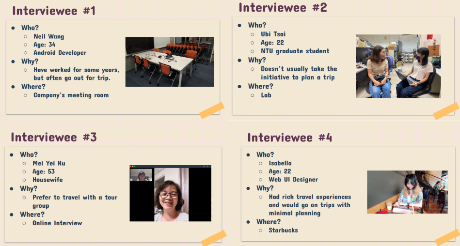
First stage
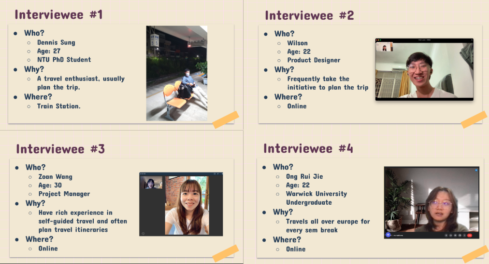
Second stage
Empathy map — what users say, do, think, and feel
We translated interview findings into empathy maps to visualize users' thoughts, emotions, and actions. Users face several challenges during trip planning:
- Scattered information across platforms. Users search on Google, YouTube, and Instagram, then organize with Google Docs, Maps, and Splitwise — switching between all of them makes planning time-consuming and hard to manage.
- Poor collaboration and hard group consensus. Planners prepare multiple alternatives for discussion, but it's still hard to meet everyone's needs, often leading to compromises and frustration.
- Trouble recording and splitting expenses. One person usually tracks expenses, but manual input and calculations lead to mistakes, forgotten costs, or misunderstandings.
- No clear, visual itinerary overview. Plans are often text, making multi-day itineraries hard to grasp at a glance — especially with external links.
- Inflexibility when plans change. Unexpected changes like bad weather or dropouts hurt the experience when there's no responsive planning tool.
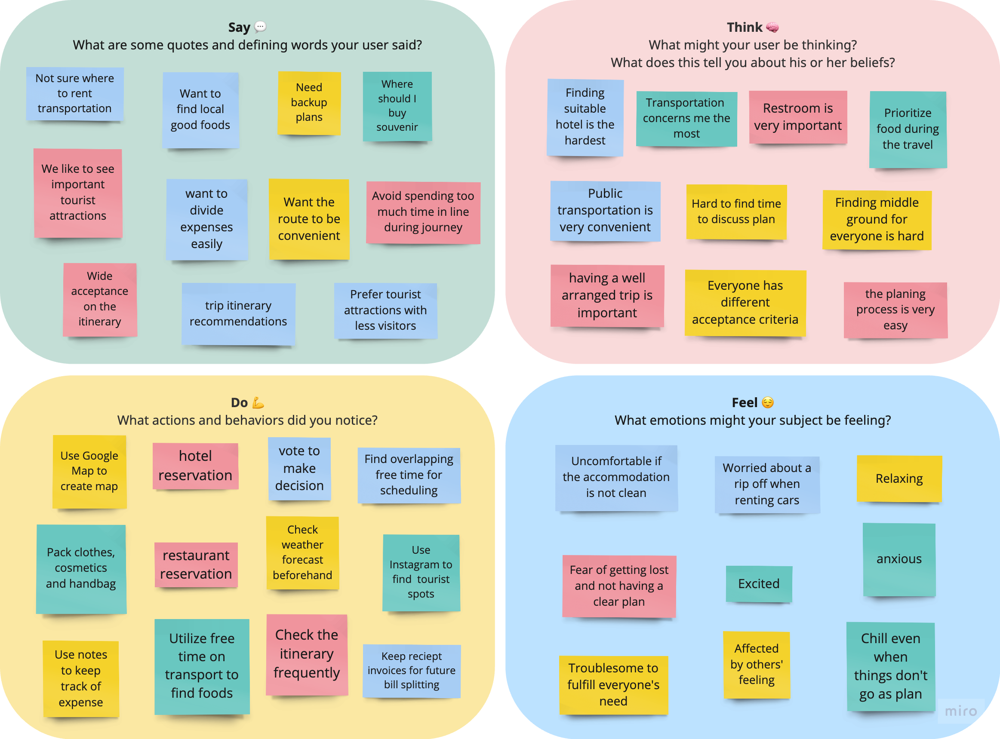
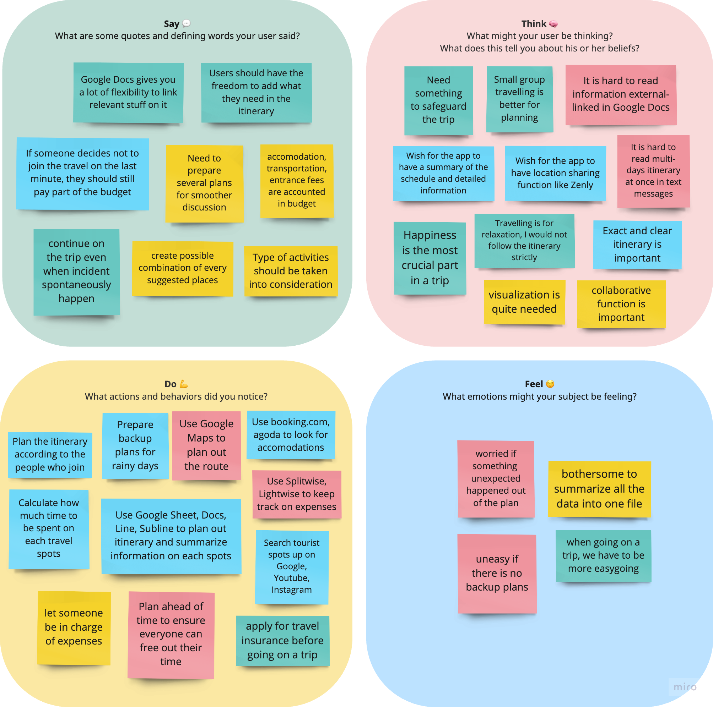
Two real users, two problems worth solving.
We turned empathy-map insights into POV statements, then into "How Might We" questions to explore solutions.
POV #1 — Scattered attraction info makes searching and selection hard
We met Zoan, who struggled to search for and choose travel attractions. Travel information is scattered across platforms, making planning slow and inconvenient; if it were all in one place, users could plan far more efficiently.
- HMW make each attraction's characteristics clearer and easier to read, offer ready-made itinerary templates for quicker decisions, and make the selection process more fun and intuitive?
- Solutions. Categorize attractions clearly (family-friendly, food, nature); offer itinerary templates to use or customize; add fun features like random picks or travel challenges.
POV #2 — Hard to meet everyone's needs in group trips
We met Dennis, who struggled to plan a trip that satisfied everyone. Plans are often made by a few people, so others compromise and satisfaction drops; voting or collaborative tools would make trips fairer and more enjoyable.
- HMW create a plan that satisfies the whole group, offer alternatives most people accept, and keep planning simple while considering everyone's needs?
- Solutions. A voting system for shared decisions; suggested alternatives that balance needs fairly; preference tagging to mark favorite spots for better matching.
Needs → design opportunities
| User Needs | Design Opportunities |
|---|---|
| Avoid switching between multiple platforms | All-in-one planner with attractions, stays, budgeting, and scheduling. |
| Help groups reach decisions faster | Voting and collaboration tools for smoother group planning. |
| Provide a clear, readable itinerary overview | Visual summaries and interactive maps for quick daily views. |
| Automate travel expense management | Built-in tools to track and split costs automatically. |
| Adapt to unexpected changes during the trip | Real-time updates and backup suggestions for delays or weather. |
From wireframes to a coherent medium-fi flow.
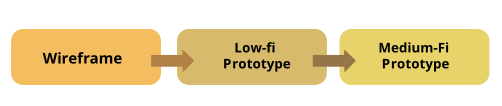
Wireframe
From the identified needs and opportunity areas, we drafted designs that emphasized trip planning and collaboration — a visual timeline and popular itinerary suggestions to simplify planning, intuitive menu layouts, complete functionality flows, and supportive imagery to aid comprehension.
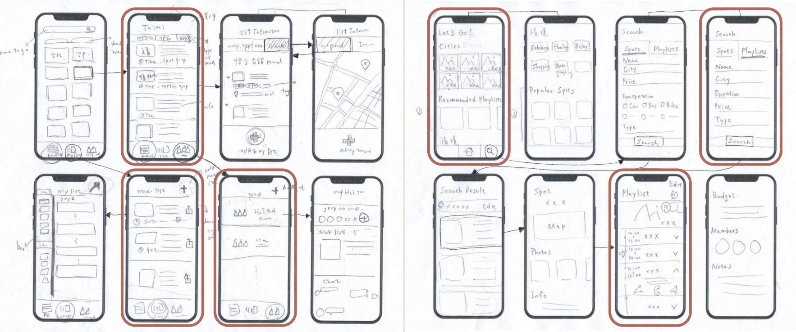
Low-fi prototype
We built a low-fidelity prototype to test key features and improve the interaction flow:
- Overview. Daily cards + map pins for quick reference.
- Explore. Tags, filters, random picks, travel challenges.
- Planning. Drag & drop, voting, and comments for collaboration.
- Expenses. Scan receipts, auto-logging, and confirmation steps.
- Adaptability. Real-time alerts and backup suggestions.
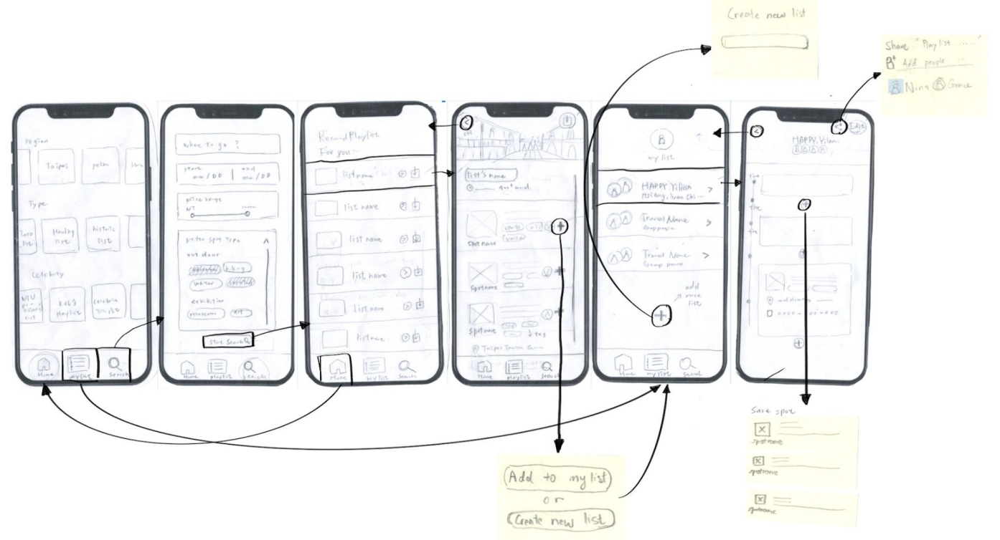
Medium-fi prototype
We refined the whole experience into a medium-fidelity prototype with full interaction mapping, visual consistency, and usability improvements — unified visual style and component coherence, seamless navigation, clear iconography and naming, improved modals and information structure, and stronger visual cues for itinerary decisions.
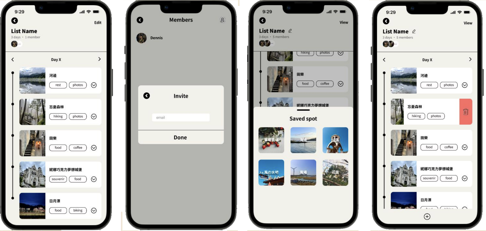
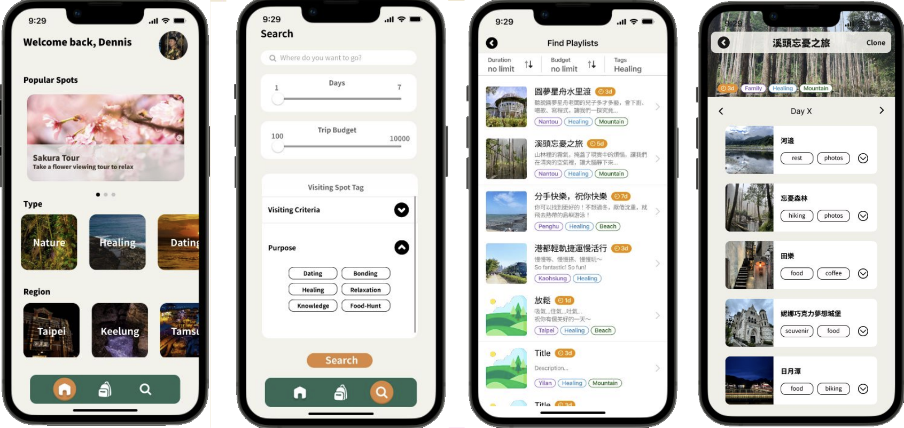
Think-aloud testing, then a polished hi-fi.
We ran user testing and applied iterative refinements to develop a high-fidelity prototype — making the final experience intuitive, accessible, and visually polished.
- Usability testing with the "think-aloud" method to observe behavior in real time.
- Found confusion with unclear terms (e.g. "Clone") and streamlined navigation from feedback.
- Adjusted terminology, simplified steps, and redesigned icons/buttons for clarity.
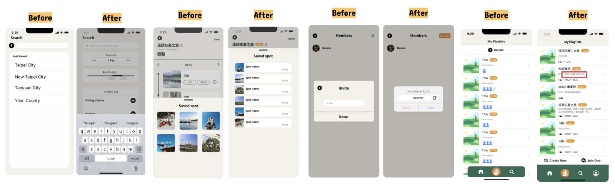
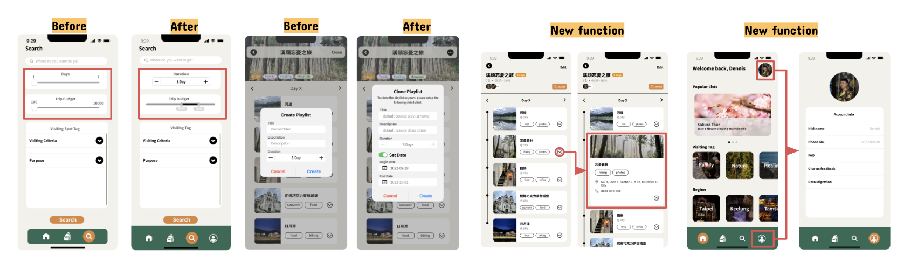
Hi-fi prototype
- Integrated visual refinements and a consistent design system.
- Enhanced layout hierarchy and interface clarity to support decisions.
- Improved interaction feedback and transitions for a more seamless, engaging experience.
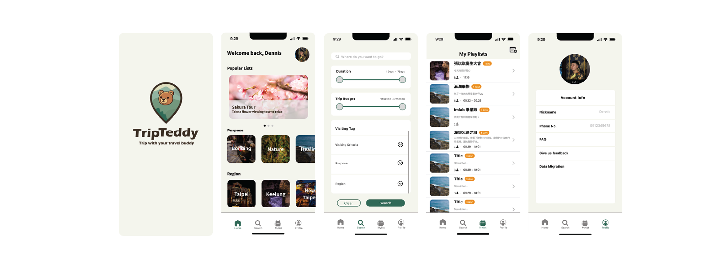
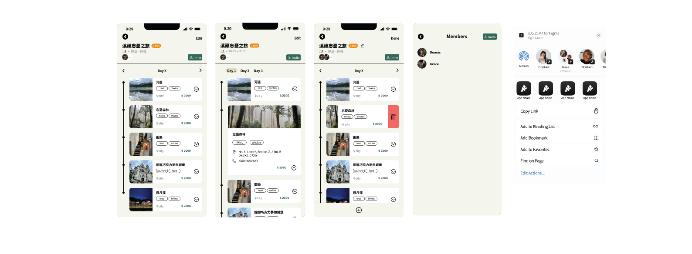
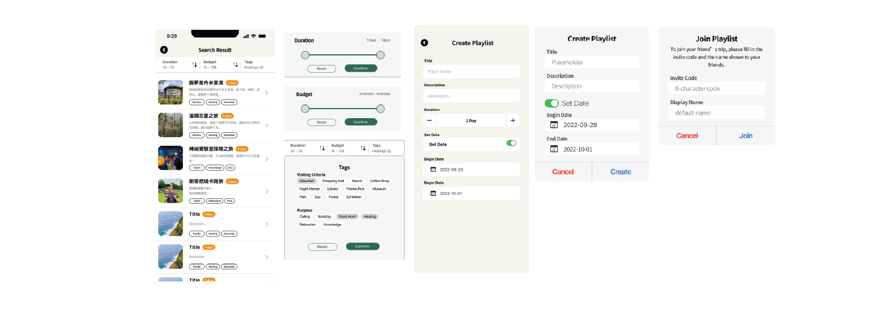
Fewer, focused features beat a pile of them.
We set out to solve common travel-planning problems with a simple, easy-to-use itinerary app — tag-based search, templates, shared editing, real-time updates. The hardest challenge was choosing which features to keep: at first we tried to include many functions, but found that too much made the app harder to use. In the end we focused on itinerary recommendations to keep things clear and expandable.
- Fewer, focused features improve the experience; too many reduce clarity and usability.
- User testing should check whether core features solve real problems, not just what's missing.
- Familiar design patterns help users understand and use the app more easily.